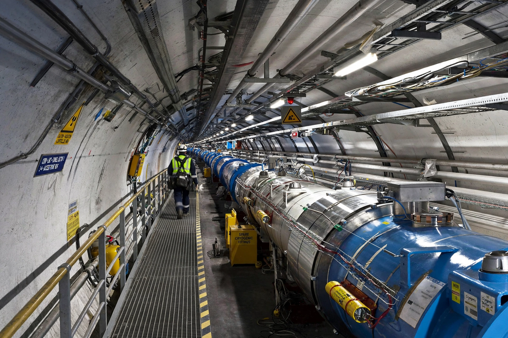

[Image: LHC tunnel — blue magnet sections curving away]
The laboratory
Founded in 1954 and straddling the Franco-Swiss border near Geneva, CERN runs the Large Hadron Collider — the 27-kilometre ring where protons collide at close to the speed of light — and a complex of smaller accelerators feeding experiments including ATLAS, CMS, ALICE and LHCb.
Highlights
CERN's homepage rotates news of accelerator operations, experiment results, and public engagement: the discovery of the Higgs boson in 2012 remains its emblematic achievement, and the lab is also where Tim Berners-Lee invented the World Wide Web in 1989.
Visiting and learning
The Science Gateway education and exhibition centre, opened in 2023 as recalled, anchors CERN's public offer alongside guided tours, open days and online resources for teachers and students.